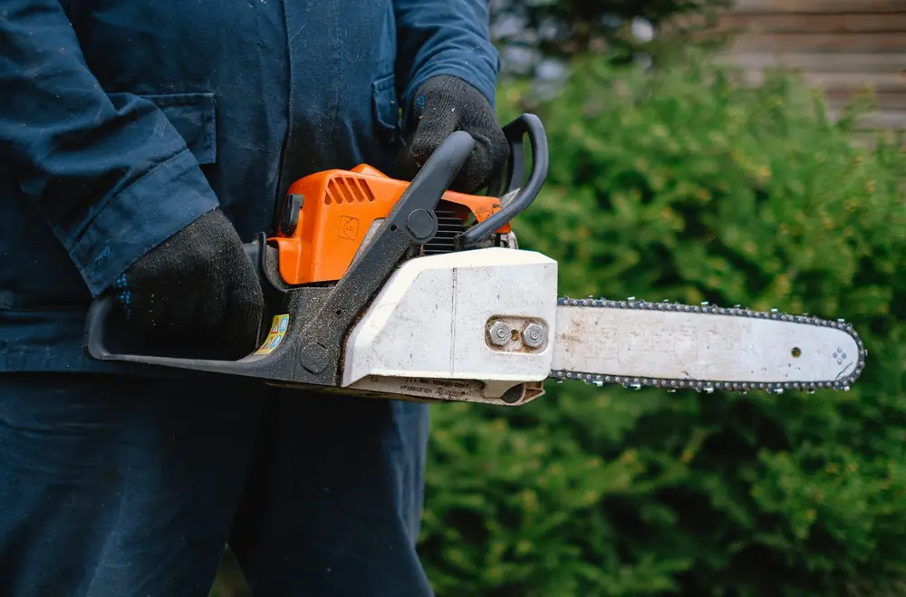
Conseil & vente
Distributeur officiel des grandes marques. Nous vous guidons vers le matériel le plus adapté à vos besoins, avec l'expertise d'un spécialiste établi à Frasnes-lez-Anvaing.

Passion & expertise depuis 1994
Vente, entretien et réparation de tondeuses, robots, tronçonneuses, débroussailleuses et taille-haies.
Du matériel performant et un suivi de qualité pour particuliers et professionnels.

Distributeur officiel des grandes marques. Nous vous guidons vers le matériel le plus adapté à vos besoins, avec l'expertise d'un spécialiste établi à Frasnes-lez-Anvaing.
Révision annuelle, affûtage des chaînes et des lames, dépannage toutes marques. Une expertise reconnue dans le Pays des Collines, la région de Tournai, Leuze et Ath.

Installation certifiée à domicile, programmation et mise en route de votre robot tondeuse. Nous nous déplaçons dans la région des Collines et environs.

De la pelouse au tas de bois, on a la machine qu'il vous faut : robots de tonte, tondeuses, taille-haies, débroussailleuses, tronçonneuses… Venez la prendre en main au magasin. On vous conseille, on l'entretient, on la répare.
Toute la gamme STIHL, à découvrir et à essayer au magasin. Nos autres marques sont présentées plus bas, dans nos partenaires.

L'avenir de la pelouse : une tonte autonome et silencieuse, installée et programmée chez vous par nos soins.
Voir les robots iMOW (nouvel onglet)
Pour les grandes surfaces : confort de conduite, large coupe et ramassage efficace.
Voir les tracteurs (nouvel onglet)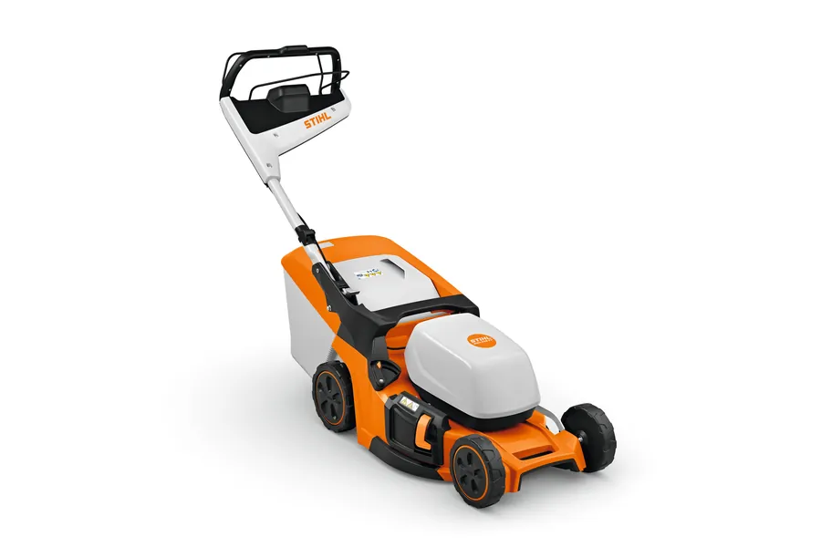
Thermiques ou sur batterie, poussées ou tractées : une gamme complète pour jardins de toutes tailles.
Voir les tondeuses (nouvel onglet)
Abattage, ébranchage et bois de chauffage. La référence mondiale de la tronçonneuse.
Voir les tronçonneuses (nouvel onglet)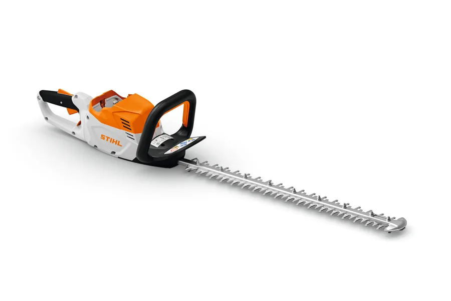
Domptez la végétation : des outils performants pour les finitions, les haies et les ronciers.
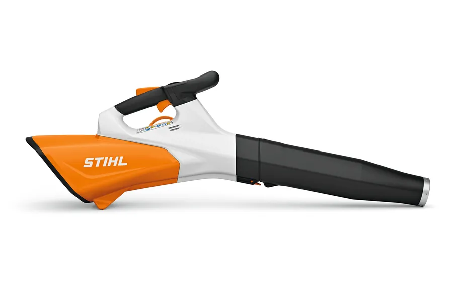
Souffleurs, aspirateurs de feuilles et nettoyeurs haute-pression pour un extérieur impeccable.
Voir les souffleurs (nouvel onglet)Ils nous font confiance pour leur jardin.
« Très bon service, très réactif aux demandes des clients. Je recommande vivement !!! »
« Boutique efficace à l'ancienne. On y trouve le conseil qu'il manque dans les grandes surfaces. »
« Prend le temps d'expliquer et de donner quelques astuces d'utilisation. Très sympa. »
« Spécialiste STIHL avec un service clientèle excellent !!! »
« Très compétent et de bon conseil. »
« Étant client, service sérieux 👍👋 »
« Bon accueil et très bon service. »
« Très bon service »
Partagez votre expérience et aidez-nous à nous améliorer : laisser un avis Google
Les offres STIHL du moment, puis nos conseils pour entretenir votre jardin et vos machines au fil des saisons.
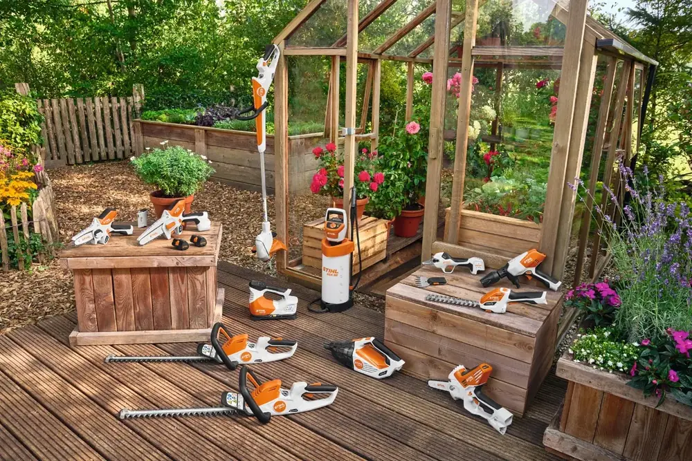
Batterie offerteAchetez un set AS participant et recevez une batterie supplémentaire, compatible avec toutes les machines du système AS.
Période de l'action : du 01/09/2026 au 31/12/2026
Pas d'action STIHL en cours pour le moment. Les prochaines offres arrivent bientôt : en attendant, feuilletez le catalogue ou passez nous voir au magasin.
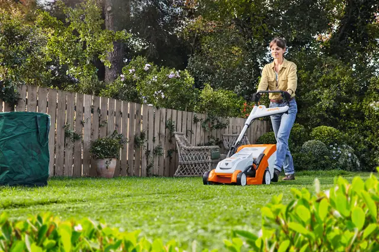
Gazon Dernière tonte de l'année Avant les premières gelées, tondez une dernière fois un peu plus haut (5 à 6 cm) : le gazon passe mieux l'hiver.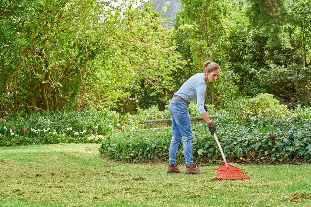
Pelouse Scarifier et regarnir Le sol encore chaud et humide est idéal pour retirer la mousse et ressemer les zones clairsemées.Souffleur, aspiro-broyeur, chaîne à affûter avant la saison du bois ? On vous conseille.
Demander conseil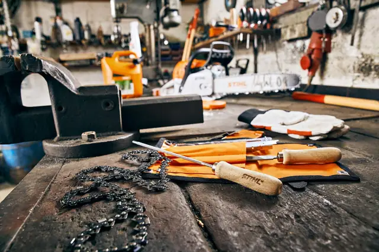
Atelier Révision d'hiver Nettoyage, graissage, vidange : profitez de l'hiver pour faire réviser tondeuses, robots et tracteurs.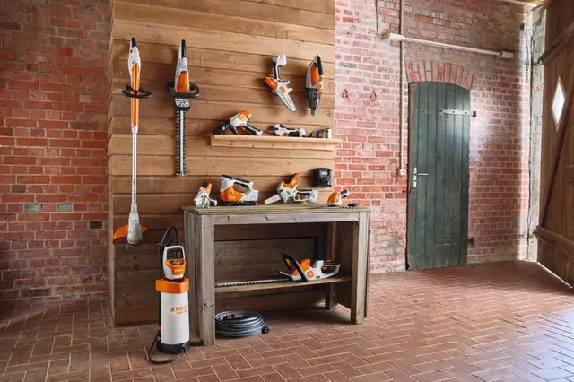
Batteries Stockage des batteries Au sec et à l'abri du gel, idéalement chargées à 50 %.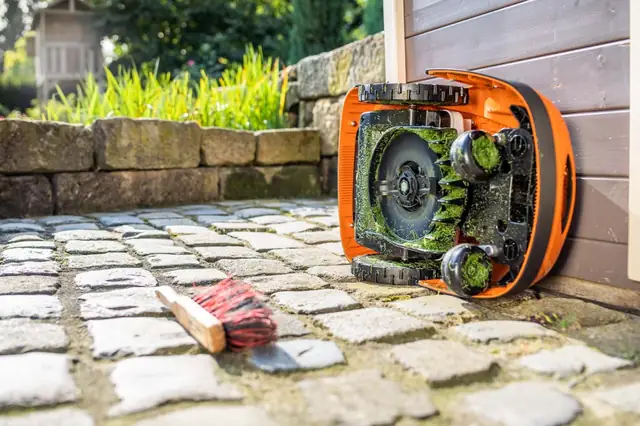
Robots Hivernage du robot Nettoyez-le et rentrez la station de charge pour éviter l'oxydation de l'électronique.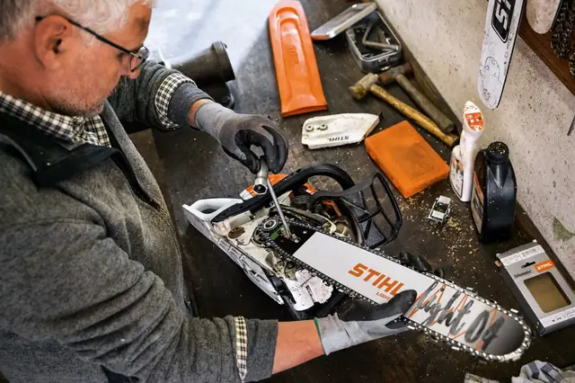
Bois Affûtage des chaînes Une chaîne bien affûtée coupe plus vite et fatigue moins la machine.L'hiver est le meilleur moment pour réserver une révision : pas d'attente à l'atelier.
Prendre rendez-vous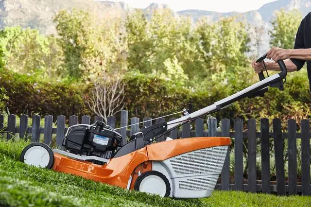
Atelier Contrôle avant la saison Lame affûtée, vidange, bougie et filtre à air : une coupe nette et pas de panne au premier démarrage.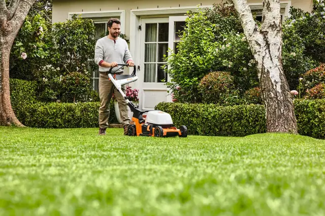
Gazon Première tonte en douceur Réglez la tondeuse assez haut, puis descendez progressivement au fil des semaines.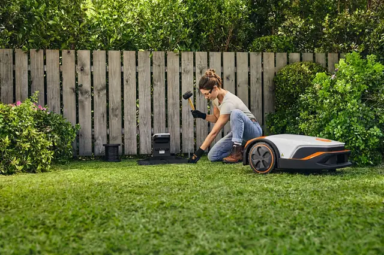
Robots Remise en service du robot Réinstallez la station et vérifiez les lames. On s'occupe de la mise à jour si besoin.Faites contrôler votre tondeuse ou votre robot avant la reprise de la pousse.
Prendre rendez-vous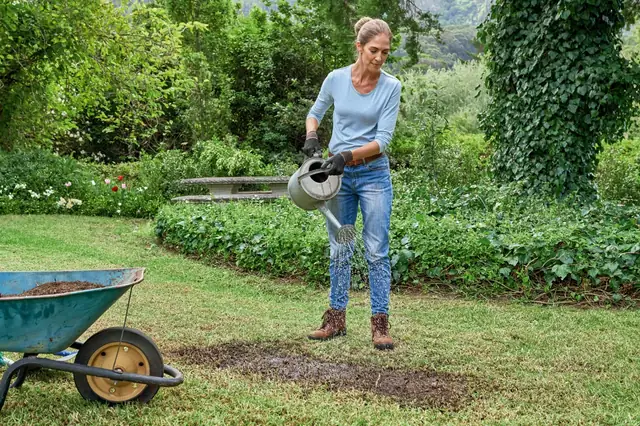
Arrosage Tôt le matin Arrosez tôt le matin ou tard le soir pour limiter l'évaporation.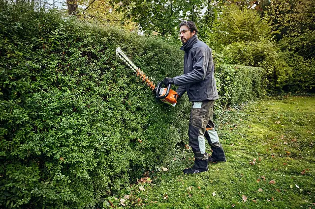
Haies Taille d'été Après la nidification des oiseaux, par temps couvert, avec une lame bien affûtée.Taille-haie qui accroche ou tondeuse qui peine ? On affûte et on entretient à l'atelier.
Faire entretenir ma machineDes marques que nous vendons, installons et réparons nous-mêmes à l'atelier.

Toute la gamme STIHL en magasin, des robots iMOW aux tronçonneuses professionnelles, avec la mise en service et le service après-vente agréé.
Une aventure familiale, de père en fils.

30+ ans de service dans le Pays des Collines
Tout a commencé simplement. Éric lance l'activité avec quelques marques reconnues. C'était le début d'une passion pour le service bien fait.
Une étape majeure pour l'entreprise : nous devenons concessionnaire officiel STIHL. L'assurance pour nos clients de bénéficier de produits de haute qualité et d'un service d'excellence.
L'atelier devenant trop restreint, nous construisons un entrepôt pour créer un espace plus grand et mieux équipé pour entretenir votre matériel.
Une nouvelle étape clé : Tanguy rejoint l'entreprise. Deux générations, deux visions, mais une seule priorité : votre satisfaction.
Réaménagement du showroom, robots connectés… On évolue avec notre temps, mais on garde notre esprit familial : ici, vous n'êtes pas un numéro.
Vous ne trouvez pas votre réponse ? Appelez-nous, on vous répond volontiers.
069 86 60 47Le choix idéal dépend de nombreux facteurs : la surface, mais aussi la pente, les obstacles et votre budget. Chaque jardin est unique !
Pour être sûr de choisir la machine parfaitement adaptée (électrique, thermique ou robot) et éviter les erreurs, nous vous invitons à passer directement au magasin. Nous analyserons avec vous la configuration de votre terrain pour vous guider vers le meilleur modèle.
Absolument. C'est notre spécialité ! L'installation comprend l'étude du terrain, l'installation (guidage GPS ou filaire), la programmation et la mise en route complète.
Pour garantir la longévité de votre machine, notre entretien annuel inclut :
Dans 90 % des cas, c'est un problème de carburant. L'essence sans plomb « moderne » (SP95/E10) se dégrade en quelques semaines et finit par boucher le carburateur.
Solution immédiate : une vidange du réservoir et un nettoyage du carburateur sont nécessaires en atelier.
Prévention : utilisez de l'essence alkylate (MotoMix) qui se conserve 3 à 5 ans, ou ajoutez un additif stabilisateur à votre essence.
Nous le déconseillons fortement pour les moteurs 2 temps et 4 temps de jardinage. L'éthanol présent dans l'essence de pompe dégrade les membranes des carburateurs lors de l'inactivité. Nous recommandons le carburant STIHL MotoMix (conservation 5 ans) pour garantir la longévité de votre machine.
N'hésitez pas à nous contacter par téléphone pour vérifier la faisabilité.
Tout à fait. Nous affûtons les chaînes de tronçonneuse, les lames de tondeuse et les taille-haies dans notre atelier.
Non, nous n'acceptons pas les éco-chèques.
Pour un usage particulier, la garantie légale est de 2 ans (1 an pour les professionnels). En utilisant exclusivement du carburant MotoMix dès l'achat d'une machine thermique STIHL, vous pouvez bénéficier d'extensions de garantie (voir conditions en magasin).
Passez au magasin à Anvaing, ou appelez-nous pour un conseil ou un rendez-vous à l'atelier.
Horaires ci-dessous
Expert en motoculture depuis plus de 30 ans. Conseil, vente et atelier de réparation agréé.
Adresse
67 Rue de la Gare
7910 Frasnes-lez-Anvaing
Téléphone
Horaires
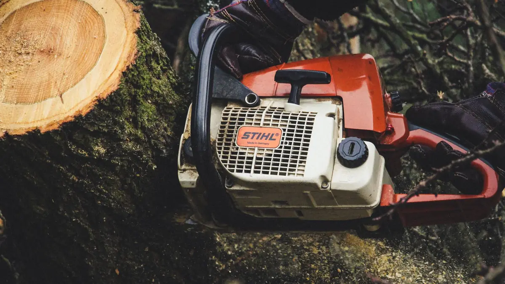
Depuis 1994, l'établissement Van De Wiele est la référence en motoculture dans le Pays des Collines. Basé à Anvaing, notre magasin familial propose un vaste choix de machines pour l'entretien de vos espaces verts, incluant tracteurs, tondeuses, robots, tronçonneuses, débroussailleuses, taille-haies, souffleurs, scarificateurs, motoculteurs, etc.
Au-delà de la vente, nous nous distinguons par un atelier mécanique de proximité, idéalement situé pour les habitants de Frasnes-lez-Anvaing et ses villages voisins (Pecq, Ellezelles, Flobecq, Leuze, Moustier, Œudeghien, Cordes, Forest, Saint-Sauveur, Celles...). Que vous soyez un particulier cherchant un robot tondeuse installé clé en main, ou un pro de la région de Tournai ou d'Ath cherchant un SAV réactif pour son matériel de jardin, nous sommes là pour vous.